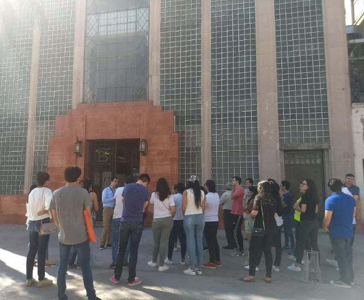
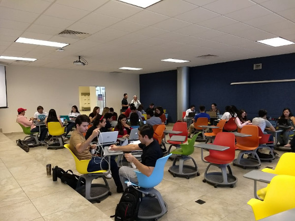

“La juventud es un complejo momento en donde criterios biológicos y psicológicos están estrechamente asociados con aspectos de orden social, demográfico, histórico, cultural y económico1”. Visto desde la demografía, son un grupo de población que varía según los contextos particulares, y que para nuestro país no existe un acuerdo sobre las edades que este periodo abarca: el gobierno federal lo ubica entre los 12 y los 29 años; aunque para ciudades de la República se ubica de los 15 a los 29 años de edad.
Del 2017 a la fecha, el IMPLAN Torreón ha realizado 5 ejercicios de participación ciudadana joven: sumando 1381 participantes, 417 ideas de proyectos, 6299 impactos y un canal de comunicación cada vez más cercano con las universidades de La Laguna y los estudiantes.
La justificación de estas acciones planeadas e impulsadas desde la Dirección de Proyectos Estratégicos del Instituto y aprobadas por el Consejo Directivo del IMPLAN Torreón, hacen sentido con los siguientes resultados:
El 42% de las empresas encuestadas en el estudio Profesionistas Torreón, han tenido vacantes sin cubrir a pesar de tener candidatos para el puesto, la brecha es alta en comparación con el dato nacional de 26%. Entre las recomendaciones está el desarrollo de competencias blandas como el trabajo en equipo, liderazgo, innovación, emprendedurismo, entre otras; de acuerdo con el Centro de Investigación para el Desarrollo A.C. (CIDAC).
La baja participación electoral en jóvenes como referente de la participación ciudadana en la Región, refiere que en las elecciones del 2018 los habitantes de 18-29 años de edad mostraron una participación menor en promedio, que los habitantes de 30-59 años por 11 puntos porcentuales. Por ejemplo en el Distrito V la participación fue de 26.7% vs 36.3% y en el distrito VI, de 31.1% vs 43.7%; de acuerdo con datos del Instituto Electoral de Coahuila, IEC.
El 34% de la población de la Zona Metropolitana de La Laguna, ZML, cuenta con 15-29 años de edad de acuerdo con la Encuesta Intercensal 2015, por lo que es relevante y responsable planear para los 403, 377 jóvenes laguneros que próximamente o actualmente inciden de manera directa en la actividad de la ciudad.
Los resultados de estos ejercicios han enriquecido la visión con la que se construyen los proyectos del IMPLAN, y en paralelo, nos han dado elementos para decidir acciones que consoliden la formación ciudadana de la juventud Lagunera en liderazgos sociales.
Fuente: Elaboración propia con datos obtenidos de la Dirección de Proyectos Estratégicos, IMPLAN Torreón.
Por ello próximamente, el Consejo Visión Metrópoli buscará reunir a 21 líderes de la ZML, en un consejo permanente de participación ciudadana que genere sus propios proyectos y que además dé impulso entre la ciudadanía a los proyectos del IMPLAN Torreón.
En su diseño, la convocatoria presenta una serie de fortalezas que pretenden innovar en el insumo - producto de esta plataforma de participación, pues la agrupación aparte de ser joven; tiene un carácter metropolitano, la capacidad para vincularse con la iniciativa privada, gobierno, ciudadanía y universidad; y perfiles avalados por un currículo social.
Creemos que la innovación de esta convocatoria reside en buena parte en otorgar un valor importante al currículo social que el participante presente; pues la experiencia, la vocación de servicio y el liderazgo operativo son también virtudes valiosas para lograr una gestión pública diferente.
Entendemos que ser universitario, es tan sólo una de las varias trincheras desde las que se ejercen acciones para mejorar a la sociedad; así que la convocatoria considera a activistas independientes, miembros de asociaciones civiles con estructura nacional o local y funcionarios de la administración municipal de Torreón que cuenten con una edad de 18 a 30 años y sean residentes de la ZML.
Dentro de las sesiones de Visión Metrópoli, el IMPLAN buscará dotar al Consejo de una estructura tal que le permita instruir a funcionarios jóvenes o aquellos que buscan serlo y concretar proyectos que sean más cercanos a la dinámica real de las ciudades; por ello la importancia de reunir en este recinto máximo 3 funcionarios de la administración municipal y 2 funcionarios del IMPLAN como cuerpo asesor, así como la organización por Comisiones de trabajo.
Para finalizar, en la determinación de cada política de juventud intervienen dos factores de manera importante: la esencia del Estado que la diseña y el rol sociopolítico que se le da a los jóvenes; en este sentido, el IMPLAN busca realizar políticas no sólo con la juventud, sino crear políticas desde la juventud; políticas diseñadas y gestionadas por los mismos jóvenes con asesoría del Instituto2.

